📌 LATEST UPDATES
WOW, thank you all worldwide for your support! 🌍
🔥 BIG NEWS — FTVR GOES GLOBAL!
Dublin 🇮🇪 · Rio de Janeiro 🇧🇷 · Tirana 🇦🇱 — Three new hubs now active for executing current and future legal operations both on and off the court. You can't silence a movement that's everywhere.
And in response to your most frequent questions: see contact →
- 7 Jul 2026 📰 SWEDISH MEDIA COVERAGE: DN publishes article: "Nordisk mästare larmar om hot: Israelerna hetsade sina fans mot mig" → See Timeline
- 20 Jun 2026 🏛️ INSTITUTIONAL ESCALATION: 31 organizations contacted, 9 responses documented, 0 investigations confirmed → See Timeline
- 18–20 Jun 2026 ⚖️ EFVL NON-RESPONSE: EFVL confirms receipt but no formal investigation; Rufus replies in writing → See Timeline
- 9 Jun 2026 ⚖️ FORMAL COMPLAINT PDF ADDED: FTVR's EFVL Code of Ethics complaint is now available to read → See Timeline
- 9 Jun 2026 🔴 GRAZ TOURNAMENT: Timeline updated — Graz LoC Tournament documented, LoC tags @israel_footvolley → See Timeline
- 9 Jun 2026 New evidence cards: racist anti-Arab comments + Ron's story threatening comments with Hebrew translations → See Protect
- 21 Jul 2025 📰 ISRAELI MEDIA COVERAGE: Mako/N12 publishes article on IFVA complaint against Yiannis → See Timeline
- 3 Jun 2026 🌍 NEW HUBS: Dublin, Rio de Janeiro, Tirana — FTVR goes global
- 3 Jun 2026 INFO section redesigned — two-tier layout, merged sections, tightened titles
- 27 May 2026 FAQ updated — Who are we? section added
- 27 May 2026 Contact section expanded with message to global community
- 26 May 2026 Sections renamed: PROTECT / RESIST / EXPOSE
- 26 May 2026 EXPOSE rewritten — IFA, EFVL, sportswashing strategy, TAFC Connection highlight → See Expose
- 26 May 2026 Hasbara: $730M propaganda machine section added → See Expose
- 25 May 2026 New evidence: @mamaninio__, @oriya_malul1, @roy___levi, @tal_hay1, @halfonthefire, @yuval_aharfi + 6 more → See Protect
- 25 May 2026 Politics × Sports evidence grid: IDF propaganda tours, TAFC Israel, @ronbenishai.ftv → See Expose
- 25 May 2026 Full Hebrew & Portuguese translations on all evidence
- 25 May 2026 Timeline expanded — IG stories, TAFC player documentation → See Resist
- 25 May 2026 FAQ: Sportswashing & Hasbara explained → See FAQ
About
Created in 2026, Footvolley Resistance was formed as an urgent initiative to protect our community, our players, and the spirit of the sport itself.
Footvolley was built by passionate people, local communities, friendships, neighborhoods, training groups, and human connection. Across the world, it remains a deeply welcoming and kind environment where people from different cultures meet through sport. That space must be protected!
Why did we create FTVR?
PROTECT Because the footvolley community can no longer ignore behaviors and realities that directly threaten the safety, dignity, and humanity of players and people around them. This includes death threats against players and their families, public and private harassment, open support for genocide and war crimes, normalization of hatred, and the growing acceptance of blood-money and political laundering inside the global footvolley environment. We must be absolutely clear about what is unacceptable. The overwhelming majority of these incidents have involved players from or associated with the apartheid ethno-supremacist state of Israel and their supporters — and in most cases the Israel Footvolley Association (IFA) was very well aware of, or even igniting them. It is important to state this clearly and honestly. At the same time, any similar behavior from any person, group, or country would be equally unacceptable.

Posted on Instagram by the Israeli account @mikasa.tu.kasa — a BOMB CASING signed with Hebrew text and "Footvolley ❤️". The inscriptions translate as follows:
Printed text: "That the whole world knew — In memory of Dor Malka" (שכל העולם ידע — לזכר דור מלכה)
Handwritten text: "The whole world knew — Dor Malka — Footvolley ❤️" (כל העולם ידע — דור מלכה — Footvolley ❤️)
The post was tagged with: @footvolleytlv, @worldfootvolley, @israel_footvolley, @arenasclub_ftv, @paulinhoftv, @bruno_foks.
Video posted by @nadav__navon (9 January 2024) of Israeli footvolley players playing altinha inside a raided Palestinian home — while serving the IDF during the ongoing genocide in Gaza. Caption in Hebrew: "קצת מהחוויה שלי בשלושה חודשים האחרונים שלא הייתי בוחר לעבור אחרת 🇮🇱" — Translation: "A bit of my experience from the last three months — I wouldn't have chosen to go through it any differently 🇮🇱"

DavidBuz (@david_bpt) — Israeli footvolley player. Messages include: “Israeli Mossad hunts the people on the evil side, be careful what you say or do”, “May all Gaza turns into hell after what they did to us, they deserve nothing more. Everyone there is involved. Stop being blind”, “Israel will conquer it eventually. And then we will take care of Turkey (for you, the Greek people) because they host Hamas terrorist now.”

Lidor Franko (@liderfranko14) — Israeli footvolley player. Messages include: “From now on you are in trouble, no Jew will support you anymore, if you are all for them, go live in Gaza and Inshallah they will rape you there”, “F**k you”, “You are f**king dead” — direct death threats against a footvolley player for sharing information about civilian casualties in Gaza.

Shahaf Lavi (@shahaflavi512) — Account associated with Israel. Message: “We understand that you want to come to Israel, if we see you in Israel we will kill you! Don't go near the State of Israel, you anti-Semite, we will murder you like the children in Gaza.” — explicit death threats and a shocking admission referencing the killing of children in Gaza.

Shaul Inbal (@shaulinbal7) — Israeli footvolley player. Messages include: “This one is going to be like people in Palestine — Dead 💀”, “I have my people in Greece that can help me cut down your business in a legal way”, “Be careful on your business”, “Retard”, “Bitch” — death threats, business intimidation, and abusive language.

Yinon Amir (@yinon.amir) — Israeli footvolley player. Messages include death threats, rape threats against family members, and Holocaust references. English: “You f**king b**ch all you know it's thanks to us”, “F**k you”, “And f**k your family”, “And I wish that your kids will be raped by terrorists like you”.
Hebrew messages translated:
- “יא מקריח יא בן של שרמוטה שיאנסו את אמא שלך” — “You baldy, you son of a whore, may they rape your mother”
- “שיעשו לך שואה יבן שרמוטה” — “May they give you a Holocaust, you son of a whore”
- “שיאנסו את האמא הזונה שלך ימכוער בפנים” — “May they rape your whore mother, you ugly face”
- “אמא שלך שרמוטה” — “Your mother is a whore”

Ben El Mashiah (@benel.mashiah) — Hasbara propaganda. Messages: “Do you know that our army informs the Palestinian civilians ahead of almost all air strikes in a move called 'knock on roof' so they can evacuate?” “Did you know that a lot of the Palestinians refuse to evacuate due to their glorifying of the Shaheed-martyrdom?” “Did you know that Hamas intentionally places its weapon storages and tunnels underneath schools, kindergartens?”
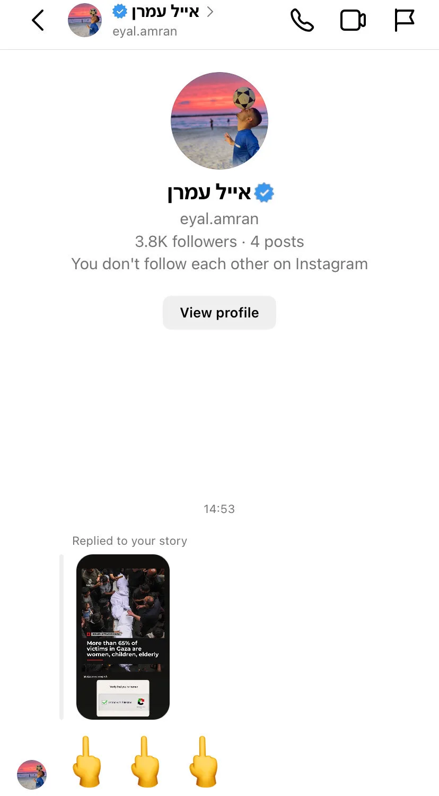
Eyal Amran (@eyal.amran) — Verified account, 3.8K followers. Replied to IG story about Gaza victims (“More than 65% of victims in Gaza are women, children, elderly”) with four middle finger emojis 🖕🖕🖕🖕
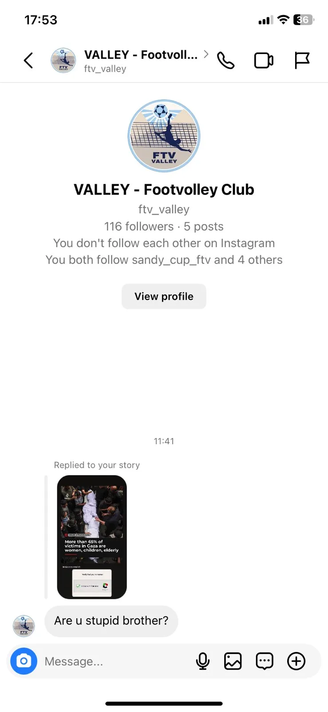
VALLEY Footvolley Club (@ftv_valley) — Replied to Gaza story: “Are u stupid brother?”

Yahav Mesika (@yahavmesika) — Messages: “It's truly disheartening to hear that you hold such a strong opinion without having a deeper understanding of the situation.” “Thank you for the reminder that, as Jews and Israelis, we can only rely on ourselves.”

Yuval Aharfi (@yuval_aharfi) — Death threats: “Go f**k yourself you are a piece of 💩”, “You need to die”, “If you stand with the terrorist you need to die”
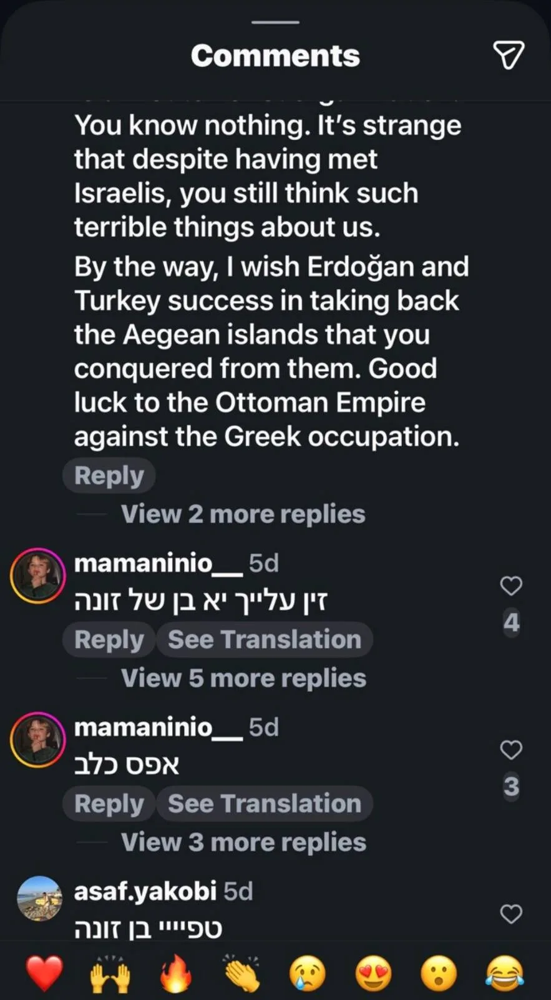
@mamaninio__ — Public Instagram comments in Hebrew:
- “זין עלייך יא בן של זונה” = “F**k you, you son of a whore”
- “אפס כלב” = “You're nothing, dog”
Also visible: @asaf.yakobi commented “טפייי בן זונה” = “Ugh, son of a whore”

Oriya Malul (@oriya_malul1) — Direct messages in Hebrew:
- “תקשיב” = “Listen”
- “יא חתיכת זין” = “You piece of d**k”
- “אתה נופל לי בידיים אתה בבעיה קטלנית” = “You fall into my hands, you're in deadly trouble”
- “מלכלך עלינו ועל המדינה שלנו אבל פרנסה אין לך בעיה לקבל מאיתנו” = “You bad-mouth us and our country but have no problem making a living from us”

Dan Goldberg (@dandangoldberg) — Hasbara propaganda exchange. Goldberg sent propaganda claiming casualties aren't real, IDF uses 'knock on roof' warnings, Palestinians “glorify martyrdom”. Yiannis responded respectfully: “I am trying to follow the situation in Middle East since 2005 quite deeply. I condemn Hamas attack on Oct 7th and consider it a war crime. Similarly, I condemn various actions of the IDF as regular and repeatedly committed war crimes.”
(2 screenshots) [View second screenshot]

Mayer Careca (@reservandhhdhd) — Intimidation: “The Israeli Fv players see you in a bad way”, “Even if it means killing others. We call it self defence”, “80 years ago 6000000 Jews were killed. It will not happen again”, “Even if some people who do not deserve to be hurt get hurt. Sad and unfortunate. But we must defend ourselves”
(2 screenshots) [View second screenshot]
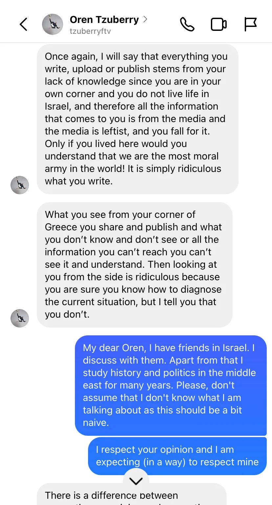
Oren Tzuberry (@tzuberryftv) — “Once again, I will say that everything you write, upload or publish stems from your lack of knowledge… we are the most moral army in the world! It is simply ridiculous what you write.” Yiannis responded: “My dear Oren, I have friends in Israel. Please, don't assume that I don't know what I am talking about. I am pro-humanitarian.”
(2 screenshots) [View second screenshot]

Raviv Lankry (@ravivlankry) — Screenshots showing hostile communications and threatening language directed at footvolley community members who spoke against genocide.
(2 screenshots) [View second screenshot]

Nadav Halfon (@halfonthefire) — Replied to Gaza story: “Because your terrorist friends hide behind them you stupid f**k”, “Wait you family gets kidnapped to tunnels”, “Wish it will happen to you”. Yiannis responded: “Nothing can justify crimes against humanity.”

Roy Levi (@roy___levi) — Public comment: “בעזרת השם אני אדליק סיגריה מהנר נשמה של הבן שלך אינשאללה” = “With God's help, I will light a cigarette from the memorial candle of your son, inshallah”
Tal Hay (@tal_hay1) — “ברו חושב שאם הוא יזיין עיזים הוא יהפוך ל🐐” = “Bro thinks if he f**ks goats he'll become a GOAT” — racist dehumanizing slur.
Video showing Israeli footvolley community members reacting aggressively to the Instagram stories about Gaza posted by Yiannis Tsiouris.
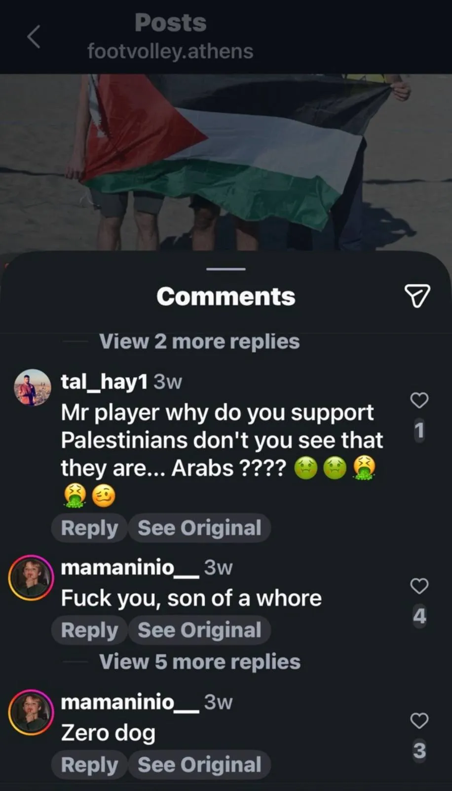
Public comments on @footvolley.athens Palestine flag post:
- @tal_hay1: "Mr player why do you support Palestinians don't you see that they are... Arabs ????" 🤮🤮🤮 — racist dehumanization of Arab people with vomit emojis
- @mamaninio__: "Fuck you, son of a whore" (4 likes) — direct abuse
- @mamaninio__: "Zero dog" (3 likes) — dehumanizing slur
These public comments reveal the racist mentality behind the threats — not just political disagreement, but deep-rooted dehumanization of Arab people and anyone who stands with Palestine.
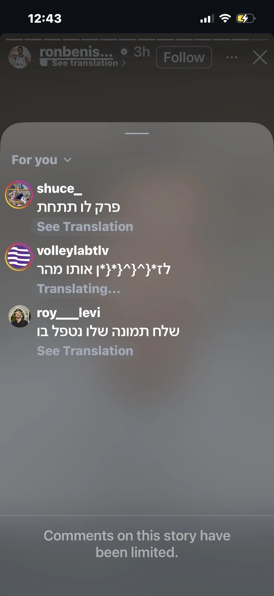
Graz LoC Tournament, June 2026: Ron Ben Ishai (@ronbenishai.ftv) posted a video to his ~25,000 Instagram followers calling FTVR co-founder Rufus Wiena a "pro-antisemite" and asking: "What would you suggest we do?"
His followers responded with violent threats:
- @shuce_: "פרק לו תתחת" — "Tear his ass apart"
- @volleylabtlv: "לז'ינ'ר'י'ין אותו מהר" — "F**k him up fast" — a Tel Aviv volleyball account. The root word לזיין (lezayen) is one of the most vulgar words in Hebrew. Unlike the English "fuck him up" (which primarily means to beat someone), the Hebrew לזיין אותו carries a significantly heavier sexual violence connotation — sitting in a grey zone between "beat the living shit out of him," "violate him" (sexual assault), and "destroy him completely." In the violence context: אני אזיין אותך = "I'll fuck you up"; זיינו אותו = "they fucked him up." The addition of מהר ("fast/quickly") implies urgency — do it now, before the opportunity passes — i.e., while the target is still at the tournament in Graz. The spelling was deliberately distorted with apostrophes (geresh marks) to evade Instagram's content moderation — proving the commenter knew it was too extreme even for social media. This is a direct call for violence with sexual violence undertones
- @roy___levi: "שלח תמונה שלו נטפל בו" — "Send his picture, we'll take care of him" — the same Roy Levi who previously threatened Yiannis's future child
Ron then posted a follow-up video thanking his followers for their "very creative ideas for what to do — NOT during the match" — explicitly endorsing the violent suggestions as off-court actions.
Note: "Comments on this story have been limited" — visible at the bottom of the screenshot
...this goes on and on, and this is just the tip of the iceberg. Similar incidents and threats of death and rape aimed at various footvolley players, their families and friends have been made both publicly and privately...
RESIST To show that there are players, organizers, coaches, and communities who stand with humanity and stand with each other. People who refuse to normalize genocide, apartheid, war crimes, crimes against humanity, racism, intimidation, or the use of blood-money to buy silence and legitimacy — both on and off the footvolley court.

Footvolley taught me many things: respect, unity, connection, community. But in times like these, sport cannot exist outside society. "No politics" has never truly existed — especially when human lives are being destroyed in front of our eyes.
Across Europe and beyond, wars, occupation, forced displacement, and mass civilian suffering are realities of our time. And in Gaza, the Palestinian people continue to endure a brutal offensive that has already taken the lives of thousands of civilians, including athletes, coaches, journalists, medical personnel, humanitarian aid workers, and children.
Many people inside sports remain silent out of fear, pressure, or convenience. Others speak despite restrictions and consequences. From Pep Guardiola to Eric Cantona, Lamine Yamal, Karim Benzema, Lewis Hamilton, and many others, prominent voices in sports have publicly supported Palestine and reminded the world that humanity comes before politics.
As Guardiola said: "When people are dying, you have to help. Never in human history have we had everything so clearly in front of our eyes."
This post is not against people because of nationality, religion, or ethnicity. It is against genocide, apartheid, dehumanization, and the normalization of mass suffering. Some still want sport to be an escape from reality. But sport reflects society. And the values we speak about every day — respect, unity, dignity — must apply to everyone, including Palestinians.
Big respect and solidarity to all humanitarian initiatives, activists, and civilians raising their voices and taking action — including @marchtogaza_greece and organizations like @gazasunbirds, who continue to represent resilience, dignity, and humanity under unimaginable conditions.
There is no more room for comfortable neutrality.
No more pretending not to know.
Humanity before everything.
As a community, we continue our original statement clearly and publicly:
🇵🇸 We stand against genocide. Always.
Yiannis, Thodoris, Rufus,
Team FVA

Nordic & Swedish Footvolley Champion 2025!
But what is this "achievement" worth? — right now, it's worth nothing.
2025 marks one of the darkest chapters in modern human history.
For 22 months now, the ongoing genocide and ethnic cleansing of Palestinians by Zionists of the Apartheid State of Israel — supported by the United States, the European Union, and several Arab oil states — have continued unabated.
Just a few days ago, Suleiman Al-Obeid, a star of the Palestinian national football team, was shot in the head while waiting for aid in Rafah. Murdered while standing in a bread line — searching for something to feed his family so they wouldn't starve to death.
The Footvolley player Yiannis Tsiouris from Footvolley Athens (@footvolley.athens) was not only harassed but also received death threats directed at him and his family after a post on Instagram, July 15, 2025, in which he simply stated that he stands with humanity.
These threats came from pro-genocide Zionists — many of them Footvolley players themselves — supported and protected by the Israeli Footvolley Community and its partners, including the EFVL (European Footvolley League).
My anger is also directed toward the global Footvolley Community, where ALMOST no one has dared to speak up or take a CLEAR stand AGAINST these atrocities.
Footvolley in the EU is currently the most "Pro-Genocidal" Sport on Earth
Futevôlei, once born in Brazil — by and for the poor, the oppressed, and the marginalized — bringing peace, joy, and unity across classes — has been hijacked.
Mark my words — this is happening right now! And people won't forget that this sport is becoming connected with "children's blood money."
But when Israeli Footvolley players and their community openly share hateful, violent messages and threaten a Greek Footvolley player and his family with death and rape — without any consequences — I must make my position absolutely clear: I want to take our sport of origin back!
The messages below, sent via Instagram DM, are just a small collection — JUST A FRACTION:
Yuval Aharfi: "Go fuck yourself you are one piece of shit. You need to die!"
Yinon Amir: "Fuck you, Fuck your Family and wish that your kids will be raped by terrorists..." Continuing in Hebrew: "May they do a Holocaust to you."
@lidorfrank14: "You are fucking dead!"
@Shaulinbal7: "This one is going to be like people in Palestine, DEAD."
@Shahaflavi512: "If we see you in Israel we will kill you! We will murder you like the children in Gaza!"
So yes, on paper, I may represent Sweden in Footvolley in the future. But my heart and soul will always, ALWAYS, represent Palestine.
From now on, I play for the murdered children who never got a chance to live, to play, to dream.
#FREEPALESTINE
Written 11/08/2025 — Rufus Wiena
Timeline of Events
15 July 2025 — Yiannis Tsiouris posts on Instagram
Shortly after three stories posted on Instagram about globally recognised war crimes and horrors in Gaza, the Greek footvolley player Yiannis (@footvolley.athens) posts: "No Time to Stay Silent. In these dark and painful times, I feel a deep responsibility to speak up. What is happening in Gaza is not a conflict—it is devastation. I stand firmly against war crimes, the mass killing of civilians, and the forced starvation of a people under siege."
"I have followed the situation in the Middle East closely since 2005, not from a position of ideology or government support—I am an anarchist—but from human connection. I have friends in both Tel Aviv and Palestine, including Greek doctors and humanitarian workers who witness and report the unimaginable suffering of the Palestinian people.
The last couple of months, I've been sharing my thoughts against the massacres happening in Gaza—calling out the war crimes and atrocities committed by the Israeli military. My message was simple: killing children, destroying hospitals, and starving civilians is not defense. It's not justice. It's not human.
For this, I've received a flood of hate: aggressive, sadistic, and even (life) threatening messages. Not just from strangers, but mostly from people within the footvolley community I've spent years helping to grow.
Let me be clear: I do not support Hamas or any state or militia. My stance is rooted in the belief that no human being deserves to be treated as disposable.
Together with our local community, we've decided to take a stand. We will boycott any soldier or open supporter of this genocide. This is not about religion, ethnicity, or nationality. It's about being against atrocities. Against oppression. And for humanity.
This is not the time for neutrality. Silence allows injustice to continue.
🇵🇸 Palestine will always be free and this has nothing to do with Hamas or any government. It's about the people."
— @footvolley.athens, 15 July 2025
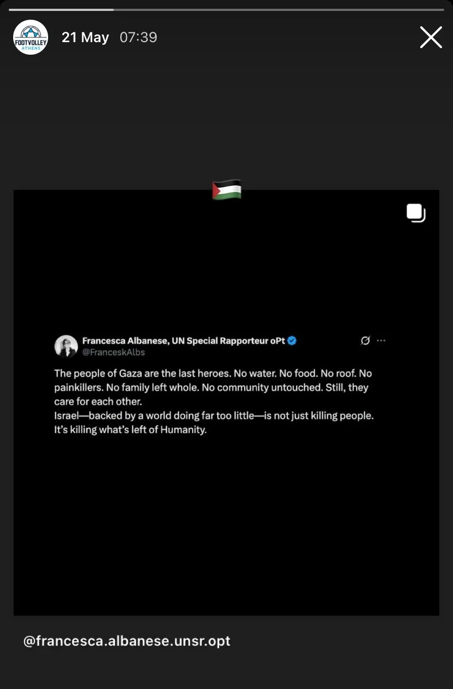
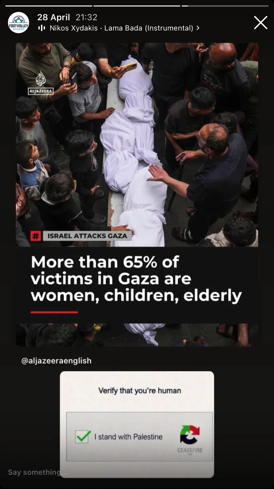
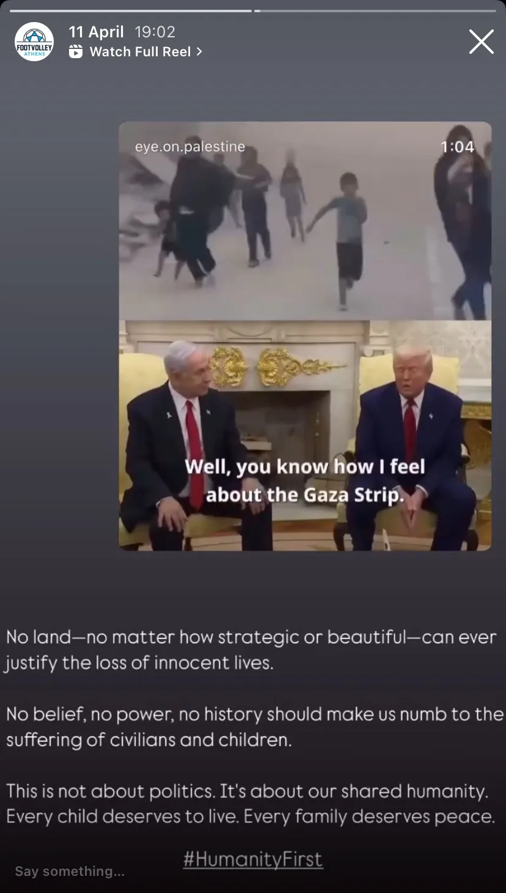
The three Instagram stories about globally recognised war crimes in Gaza that preceded the post
The post that started it allDeath and rape threats from Israeli players
Multiple dozens of Israeli footvolley players and their supporters — including many people he had never met or interacted with personally — coordinated waves of death threats, rape threats against his family and friends, Holocaust references, harassment, and business intimidation. The pattern, timing, and scale of the attacks made it clear that this was not isolated behavior, but an organized and targeted campaign of intimidation, of which only a small fraction is documented in the evidence grid above.
11 August 2025 — Rufus shows support, publishes video and article
Rufus Wiena publicly supports Yiannis in the community, releases the video "No Time To Stay Silent", and writes the article "Nordic & Swedish Footvolley Champion 2025 — But what is this achievement worth?"
Article + VideoIsrael files a complaint — EFVL (European Footvolley League) targets Yiannis
Instead of addressing the death threats, the EFVL president wants to "discuss Yiannis' behaviour" — not the Israelis who made the threats. The complaint focuses on silencing the victim, not the aggressors.
📄 View the Israel complaint (PDF)
Documented21 July 2025 — Israeli Media Covers the Story: Mako/N12 Article Published
Israel's mainstream news outlet Mako (N12 / Keshet Media Group) — the digital arm of Keshet 12 / Channel 12 — publishes an article about the IFVA complaint against Yiannis Tsiouris. The article, by journalist Ben Goldfriend, confirms that IFVA demanded Yiannis's suspension from EFVL for refusing to train Israeli players and citing the ongoing genocide in Gaza.
This matters because the campaign against Yiannis was not hidden inside private federation correspondence. It was amplified through mainstream Israeli media.
Footvolley: Senior European Federation Official Prevents Israelis from Training in Greece
Requested to Train in Greece and Were Refused: "We Boycott People Who Support Genocide"
The Israeli Footvolley Association demands the suspension of the Greek representative in the European League leadership and one of the senior figures in the sport, Yiannis Tsiouris, after he prevented Israelis from training in Greece claiming they actively participate in genocide against Palestinians.
Author: Ben Goldfriend · Published: July 21, 2025, 01:13
Israeli footvolley players who arrived in Greece and requested to train at the facilities of the Greek representative in the European League and one of the senior figures in the sport, Yiannis Tsiouris, encountered refusal due to the claim, according to him, that they support and even participate in genocide against Palestinians in Gaza. In response, the Israeli Footvolley Association is demanding his suspension from the league.
The Israeli Footvolley Association, which is currently holding the "Yaaz" Footvolley League in cooperation with Tel Aviv-Yafo Municipality, sent an official letter to the European Footvolley League - EFVL requesting disciplinary action against Yiannis Tsiouris, the Greek representative in the league leadership on behalf of Footvolley.Athens, following a series of actions and statements against Israeli athletes in the sport.
The Scandalous Message from Tsiouris | Photo: Private
In the letter, signed by Israeli Association board members Rafi Ancona and Yehonathan Menashe, and sent through the Association's representative in the European Footvolley League Gal "Hofu" Levi, allegations arise of inappropriate behavior by the senior Greek representative, including claims of repeated discrimination against Israeli players in violation of EFVL regulations.
The letter noted that Tsiouris, who constitutes a significant figure in the sport, used social media to raise accusations against Israel following the "Iron Swords" war, while calling to boycott Israeli players as a result. Among other things, it was noted that on several occasions Tsiouris sent messages to Israeli players who requested to schedule training sessions and collaborations in Greece in which he wrote that "during the recent period of active genocide in the Middle East, we decided to boycott people who support it explicitly or implicitly." Additionally, it was noted in the complaint letter that Tsiouris published anti-Israel content on his official Instagram page, in which he accuses Israel of genocide.
"Such behavior is intended to create discrimination based on citizenship and political affiliation, defamation of a league member state, and encouragement of political isolation in the sports community," it was written. It was further noted that these actions constitute a violation of the European Footvolley League regulations and international norms, including through the introduction of politics into the sport, harm to equal treatment between players, exposure of them to security risks, and more. The letter cited the sections that Tsiouris clearly violated, alongside violation of the principle of political neutrality in sports and harm to commitments to fundamental rights of the European Union, which prohibits refusal to provide services based on belief or national affiliation.
Israeli Association officials noted that in his actions, Tsiouris isolates and creates stigma toward Israeli players in the sport, encourages other league members to adopt anti-Israel positions, and effectively creates an unsafe environment for Israeli athletes abroad.
The letter was signed with a demand to conduct a disciplinary investigation with Tsiouris, to warn him to cease his activities on the subject, and to consider temporary suspension or disqualification from participation in events related to the European Footvolley League. The letter also demanded that the European League leadership publish confirmation of its commitment to neutrality and non-discrimination for all member states.
The "Yaaz" Footvolley League games are held every Saturday from 16:00 at Frishman Beach, until August 16. The league, with the participation of dozens of players from the country and around the world, is organized by the Israeli Footvolley Association, in cooperation with Tel Aviv-Yafo Municipality and with the support of "Yaaz Entrepreneurship and Construction" company.
Mako is owned by Keshet Media Group, the digital arm of Keshet 12 / Channel 12, one of Israel's main TV channels. Public media research identifies Mako as one of Israel's major mainstream online news platforms. This is not fringe media.
15 August 2025 — Rufus writes an urgent letter to the Swedish Footvolley Board
A formal letter is sent to the Swedish footvolley federation. The response: no response, no communication, complete silence. Deeply disturbing — but sadly, not unexpected.
📄 Read the urgent letter to Sweden (PDF)
No responseBlood money enters the footvolley community
Blood money directly connected to the apartheid state of Israel and linked to the IDF is offered to various footvolley players globally — many accept, even though they know where it comes from.
Blood moneyMarch 2026 — TAFC Israel is announced
A footvolley tournament (TAFC World Cup Red Sea) is planned in Eilat, Israel — originally for March 19–21, 2026, then rescheduled to May 6–9, 2026 — later cancelled and postponed due to the US-Israel vs. Iran conflict. Many professional and non-professional international footvolley players sign up without hesitation, accepting the money offered, showing no moral objection, and by participating openly endorsing the ethno-supremacist apartheid state of Israel which has its so-called "most moral army in the world" committing an active genocide in front of the eyes of the world.

TAFC Israel participants with country of representation and player tags
⚡ 15 May 2026 (Nakba Day) — The Footvolley Resistance Club is created
With crystal clear guidelines to stand with humanity. In times like these, sport cannot exist outside society. "Do not mix politics with sport" has never truly existed — especially when human lives are being destroyed in front of our eyes. This is not even about politics anymore — it is about humanity. And unfortunately, the global footvolley community is now deeply involved.
FTVR Founded · 15 May 2026 · Nakba Day4–8 June 2026 — Graz, League of Champions Tournament
FTVR co-founder Rufus Wiena competes at the League of Champions tournament in Graz. Behind the scenes, the website and documented threats are the talk of the community — everyone knows. Yet no one acts.
During the tournament, Ron Ben Ishai posts a video to ~25,000 followers calling Rufus a "pro-antisemite" and asking: "What would you suggest we do?" Followers respond with: "Send his picture, we'll take care of him" (@roy___levi). Ron follows up thanking them for "very creative ideas for what to do — NOT during the match."
@ronbenishai.ftv
Ron Ben Ishai's Instagram story — calls Rufus Wiena a "pro-antisemite" to ~25,000 followers and asks: "What would you suggest we do?"
"What if I told you there's a guy here in Europe, a player who is a pro-antisemite, and his entire purpose, everything he's trying to do, is to make sure that we Israelis don't play in the European tournaments — because of the whole situation and the genocide and all that nonsense."
"He's even submitted a request to the European federation with a demand that we shouldn't participate, and that his country, Sweden, also shouldn't participate."
"And what if I told you that this guy — we're playing against him in our very first match?"
Comments on @ronbenishai.ftv story
Followers respond with violent threats:
@roy___levi: "שלח תמונה שלו נטפל בו" — "Send his picture, we'll take care of him"
@shuce_: "פרק לו תתחת" — "Tear his ass apart"
@volleylabtlv: "לז'ינ'ר'י'ין אותו מהר" — "F**k him up fast" — a Tel Aviv volleyball account. The root word לזיין (lezayen) is one of the most vulgar words in Hebrew. Unlike English "fuck him up" (primarily meaning to beat someone), the Hebrew לזיין אותו carries a significantly heavier sexual violence connotation — sitting in a grey zone between "beat the living shit out of him," "violate him" (sexual assault), and "destroy him completely." The addition of מהר ("fast") implies urgency — do it now, before the opportunity passes — while the target is still at the tournament. The spelling was deliberately distorted with apostrophes (geresh marks) — proving the commenter knew it was too extreme even for Instagram and attempted to evade content moderation
"Comments on this story have been limited"
Based on the documented track record of threats from IFVA-affiliated accounts, one can only imagine why this comment section was restricted.
@ronbenishai.ftv — Follow-up
Ron thanks his followers for their "very creative ideas for what to do — NOT during the match."
"OK so, after many very creative ideas, very creative, that you gave me for what to do — not during the match. We just played and beat them 18-4. And that's it. Moving on to the next matches."
He acknowledged the violent suggestions, called them "creative", and noted they were about off-court actions.
This completes a three-part evidentiary chain:
(1) Incitement → "What should we do?" → (2) Violent responses → "Send his picture" → (3) Endorsement → "Very creative ideas for what to do NOT during the match."
In most European jurisdictions, this sequence constitutes criminal incitement to violence.
🦩 "Flamingo" — Belonging to No Nation?
In July 2025 — just weeks after the first documented threats against Ioannis Tsiouris — League of Champions introduced "Flamingo": a so-called "European club belonging to no nation."
According to LoC's own announcement, Flamingo was created as a voluntary option for players and local organisers, with the stated purpose that "as many players, volunteers and sponsors as possible can feel safe, take part and compete." Acceptance under Flamingo requires the local organiser to assess:
- Whether Flamingo is a relevant solution in the local context
- Whether the individual(s) can be accepted under the concept
- Whether the collaboration supports a respectful and safe environment for all participants, volunteers and sponsors
In Graz, Israeli players Ron Ben Ishai and Maor Haas competed under Flamingo. Their club names appear blank in the official standings — no flag, no nation, no affiliation. Compare this to other players, whose clubs and points are displayed like every other competitor. On paper, Ron and Maor belong to no one.
But here is the contradiction:
During and after the Graz tournament, League of Champions tagged @israel_footvolley on their Instagram to celebrate Ron and Maor's results. The very same @israel_footvolley whose affiliated members and supporters are documented on this website sending death threats and inciting violence. So which is it — belonging to no nation, or representing Israel?
And regarding the safety criteria: the local organiser in Graz — an EFVL Executive Committee member — was fully aware of the documented threats at ftvresistance.com before the tournament. Ron Ben Ishai then posted a video during the tournament inciting violence against a fellow competitor, and his followers responded with violent threats that could directly compromise the player's safety. Yet no action taken.
Did Flamingo's safety assessment ever take place? Did anyone ask whether allowing a player — whose affiliated community has been documented sending death threats and whose own conduct includes economic coercion and incitement to violence — to compete "supports a respectful and safe environment for all participants"?
It is also worth noting that Flamingo's rules and guidelines appear to exist only on LoC's Instagram account — we were unable to find them on LoC's official website. Make of that what you will.

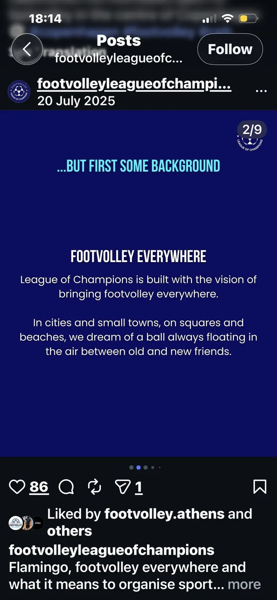

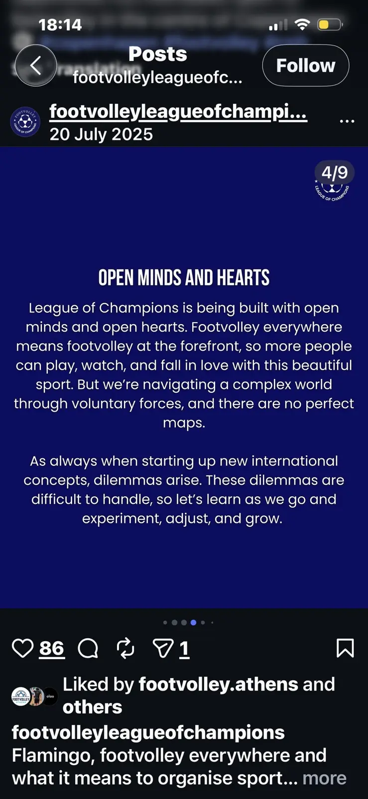
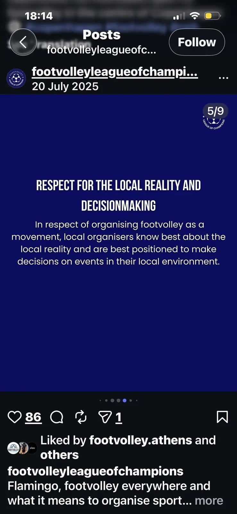


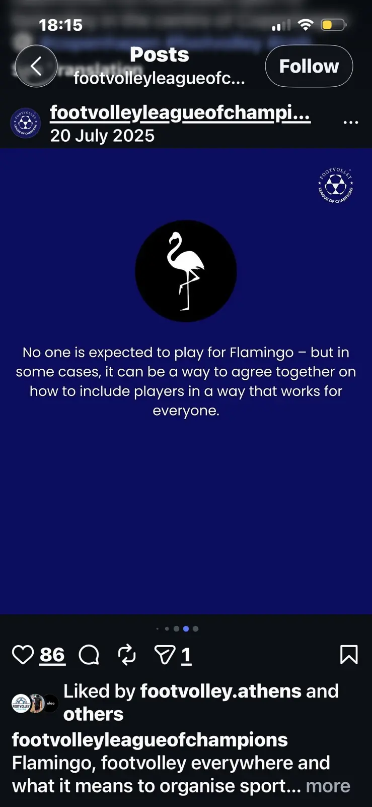
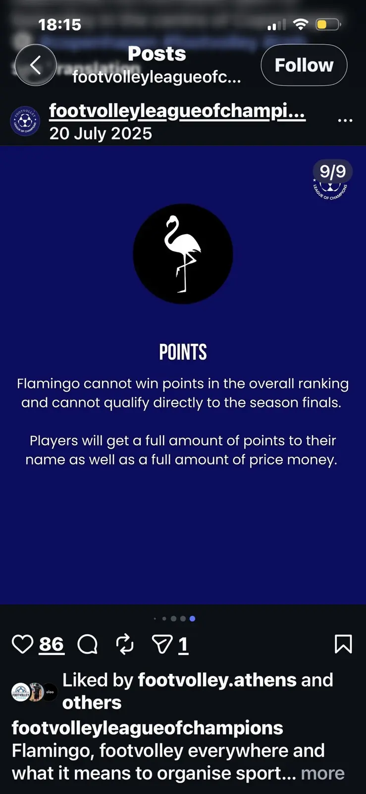
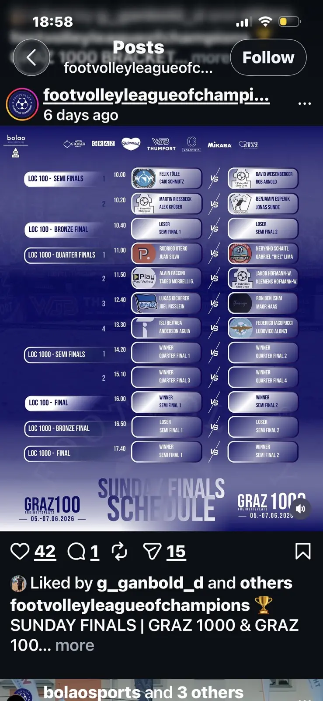
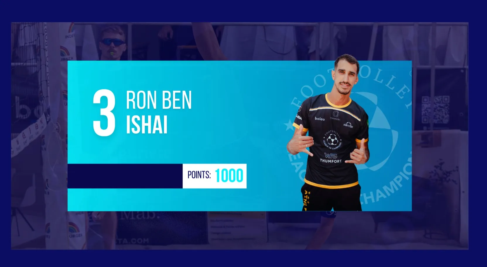
League of Champions' own slides introducing "Flamingo" — posted on their Instagram account, 20 July 2025.
From League of Champions' own website:
"League of Champions cannot host players who threaten, intimidate, or engage in behaviour that compromises the safety, dignity, or wellbeing of other players, organisers, volunteers, or spectators at any tournament."
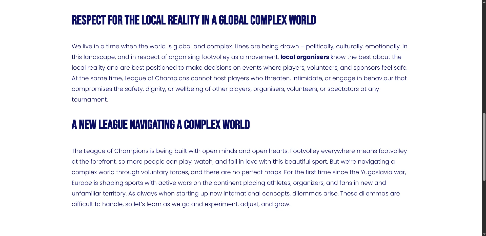
LoC's own published rules on their website
League of Champions was informed — in person and through the documented evidence at ftvresistance.com — about the conduct of IFVA-affiliated players well before this tournament. The EFVL President served as referee. An EFVL Executive Committee member organised the event. Both were fully aware.
Players openly wore IFVA-branded clothing in the players' area at Freiheitsplatz — choosing to represent and normalize the very association whose affiliated members and supporters send death threats and incite violence. If you choose to wear their brand, you choose to stand behind their conduct. It is worth noting that IFVA was clearly tagged on the @mikasa.tu.kasa BOMB CASING post — and as far as our research has been able to find, no condemnation was ever made by IFVA, nor by any of the other tagged accounts, nor by any official footvolley organisation.
After the tournament, League of Champions tagged @israel_footvolley on their Instagram — the very association documented above.
LoC tags @israel_footvolley
We find this a deeply concerning signal from an organisation that was fully aware of the documented threats, incitement, and violent harassment connected to this association. We are not claiming that LoC violated their own policy. We are asking a simple question: Is this the stance you want to take?
The tournament itself was well organised and we want to give credit where it is due. Good organisation, however, does not excuse institutional silence on safety. We hope that meaningful action will be taken — not just words, but accountability.
"Despite everything, I had a wonderful time with many players on the side courts — people from all over the world. A few came up, encouraged me, and appreciated what FTVR is doing. Not just for standing up for a friend, but for humanity. There are people in this community who want justice — just like us. That warmth will fuel our movement. We will never stop fighting for justice. We will never forget, and everyone accountable will have to answer for their actions — or their silence." — Rufus Wiena
Graz · League of Champions · June 2026⚖️ 9 June 2026 — Formal Complaint Filed to EFVL
Rufus Wiena and Ioannis Tsiouris file a formal complaint to the European Footvolley League (EFVL) under Code of Ethics §2.1 (Discrimination) and §2.3 (Respect). The complaint contains 6 specific demands and sets a 10-day deadline. EFVL President Igor Alberto Oliveira acknowledges receipt the same day.
📄 Read the formal complaint (PDF)
Formal complaint · 6 demands · 10-day deadline18–20 June 2026 — EFVL's Non-Response + Rufus's Reply
On 18 June 2026, after the formal complaint had been filed and the 10-day deadline was expiring, EFVL sends a short response via footvolleyeurope@gmail.com. The message confirms neither whether a formal investigation has been opened nor addresses any of the six demands in the complaint.
"Dear Rufus,
Thank you for your email regarding the situation. This message serves as formal confirmation that your correspondence has been received.
The matter has been forwarded to the relevant department for review. Ensuring a secure environment within EFVL-related games remains a priority. You will be contacted once the review is complete.
Best Regards
EFVL - European Footvolley League"
Source: Email from European Footvolley League <footvolleyeurope@gmail.com>, 18 June 2026.
On 20 June 2026, Rufus replies in writing, re-attaching the formal complaint and anchoring the record: the complaint was submitted on 9 June, acknowledged the same day by EFVL President Igor Alberto Oliveira, and the six demands remained unanswered.
"Dear EFVL Executive Committee,
I acknowledge receipt of your message of 18 June 2026. For the record, my formal complaint, co-signed by Ioannis Tsiouris and re-attached here for completeness, was submitted on 9 June 2026 under EFVL Code of Ethics §2.1 and §2.3, and acknowledged by President Igor Alberto Oliveira on the same day. It set out six specific demands in Section 11 to be met within ten calendar days of receipt. More than ten calendar days have since elapsed.
Your message confirms neither whether a formal investigation has been opened nor its scope, and addresses none of the six demands. I therefore ask for a single written point of contact and a written yes/no confirmation that a formal investigation has been opened under the Code of Ethics.
For the integrity of the record, I will keep all substantive correspondence in writing.
I reserve all rights and remedies.
Respectfully,
Rufus Wiena
Current Swedish and Nordic Footvolley Champion
Co-founder, Footvolley Resistance Club (FTVR)"
Sent to European Footvolley League and Igor Oliveira, 20 June 2026. Attachment: FTVR-Formal-Complaint-EFVL-Code-of-Ethics-2026.pdf.
After this point, EFVL never responded. No single point of contact was provided. No confirmation that a formal investigation had been opened was ever given. No further communication was received from the European Footvolley League or its president. With the EFVL channel stalled and unanswered, Rufus decided to take new roads to continue the fight for justice — filing police reports in Sweden and Austria, going to the international press, and launching the FTVR campaign.
🏛️ Institutional Escalation — The Work Behind the Curtains
After EFVL's non-response, the case is escalated to 31 organizations across sport governance, athlete welfare, human rights, EU institutions, and international bodies. Here is what happened:
This timeline summarizes documents and correspondence on file. Some institutional replies are summarized to protect privacy, confidentiality, and ongoing processes. Responses from institutions are included where available.
| Institution | Response | Status |
|---|---|---|
| EFVL (European Footvolley League) | Non-substantive response. No investigation confirmed. | ❌ |
| IFVA (Israel Footvolley Association) | No response to media inquiry. | ❌ |
| IOC Ethics & Compliance | Declined jurisdiction — EFVL not IOC-recognised. | ❌ |
| FIFA Ethics Committee | Acknowledged — not a FIFA-governed sport. | ❌ |
| FIFPro (World Players' Union) | Does not represent footvolley players. | ❌ |
| Swiss BASPO (Federal Office of Sport) | Not their remit — directed to IOC + police. | ❌ |
| Safe Sport International | Cannot intervene in individual cases. Safeguarding Panel reviewing for general guidance. | ⚠️ |
| Play the Game | Called the complaint "impressive" and the transgressions "outrageous." Referred onward due to capacity constraints. | ⚠️ |
| EU FRA (Fundamental Rights Agency) | Acknowledged. Brought to FRA expert teams on discrimination & online hate speech for correlation with ongoing data collections. | ⚠️ |
| European Parliament (PETI) | Petition submitted and confirmed. Being processed. | ⏳ |
| 14 other organizations | Contacted across sport governance, athlete welfare, human rights, and EU institutions. Awaiting response. | ⏳ |
The pattern: Every institution either says "not our remit" or "we can't intervene in individual cases." Five jurisdictional declines. Zero condemnations of the threats. Zero investigations opened.
As Play the Game wrote in response, the complaint was "impressive" and the transgressions "outrageous" — yet the organization could only refer us onward due to capacity limits.
The EU Fundamental Rights Agency acknowledged the case and forwarded it to expert teams on discrimination and online hate speech — for correlation with ongoing data collections. FRA does not have the mandate to intervene in individual cases.
The athlete did everything right. Contacted every relevant body. Filed police reports in two countries. Submitted formal complaints. Documented everything.
The system has done nothing — yet.
🚨 Police Reports Filed — Sweden & Austria
Police reports and written submissions have now been filed in two countries:
- Sweden: Police report filed in mid-June 2026. Case reference available to journalists on request.
- Austria: Written submission (Sachverhaltsdarstellung) sent in mid-June 2026 to Graz police. After calls, two initial email addresses, roughly ten days without answer, six additional phone attempts, and two further emails to police departments, Landespolizeidirektion Steiermark, SVA 1 – Strafamt finally confirmed receipt and forwarded the report for processing. Still waiting.
Note: Full police reports and case reference numbers are not published here. They are available to journalists and relevant authorities on request.
Sweden · Austria📰 7 July 2026 — DN Article Published
Dagens Nyheter (DN) publishes Kristina Hedberg's article on Rufus Wiena, the threats, and the silence from the footvolley community.
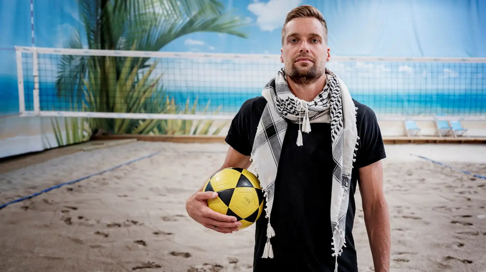
📰 Read DN: "Nordisk mästare larmar om hot: Israelerna hetsade sina fans mot mig"
Nordic Champion Warns of Threats: “The Israelis Incited Their Fans Against Me”
Original Swedish: “Nordisk mästare larmar om hot: Israelerna hetsade sina fans mot mig”
Text and photos: Kristina Hedberg and Veronika Ljung Nielsen · Published: 7 July 2026 · DN · Göteborg
Nordic champion Rufus Wiena — who has spoken out for Palestine — recently had to flee a footvolley tournament in Graz and contact the police.
“The Israelis incited their fans against me,” says Wiena, who believes the sport has long failed to act against similar hate attacks.
When Rufus Wiena stepped off the footvolley court in Graz, Austria, on June 6th, after losing to the sport's two top Israeli players, his phone blinked with missed calls. All from his girlfriend. Rufus called back immediately.
“Have you seen?! They're writing that they're going to get you. You need to get away from the Israelis. Now!”
In the seemingly playful setting of a footvolley tournament, Wiena felt forced to flee for his life.

Already a year ago, Rufus Wiena from Gothenburg followed how his Greek colleague — Ioannis Tsiouris — landed in trouble within the footvolley league because he openly condemned Israel's warfare against the Palestinians. The Greek was met with threats and hatred from Israeli footvolley profiles on social media:
“You will die!”
“You're in deep trouble now. It's over for you.”
“I hope your children and your whore of a mother get raped.”
Wiena couldn't believe his eyes when he read the comments and turned to the organisations within the sport. In a letter to the board members of Footvolley Sweden in August last year, Rufus Wiena wrote that this must be condemned.
“So far, they've reacted by doing nothing, as far as I can see. I became more and more upset. Before this, I was of course not unaffected by the war, but I wasn't outspoken about it either,” says Rufus Wiena.
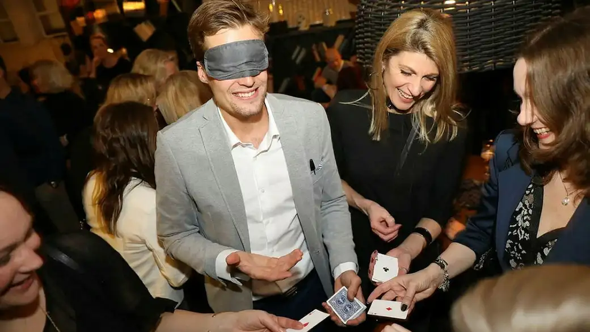
Alongside his regular job — as a magician and lecturer — Wiena began documenting what he saw as a deeply alarming development within footvolley. On his website, he has posted screenshots of the threats and created a timeline detailing his contacts with those responsible within the sport. He also takes a clear stance for the civilians in Gaza and the West Bank.
Rufus Wiena's views were thus well known when the early-summer tournament in Austria opened. In the very first match in Graz, Wiena and his partner were drawn against an Israeli team.
“One of those players has 25,000 followers and posted a story where he asked them what they should do with someone like me. ‘Post a picture, and we'll take care of him,’ was the response.”
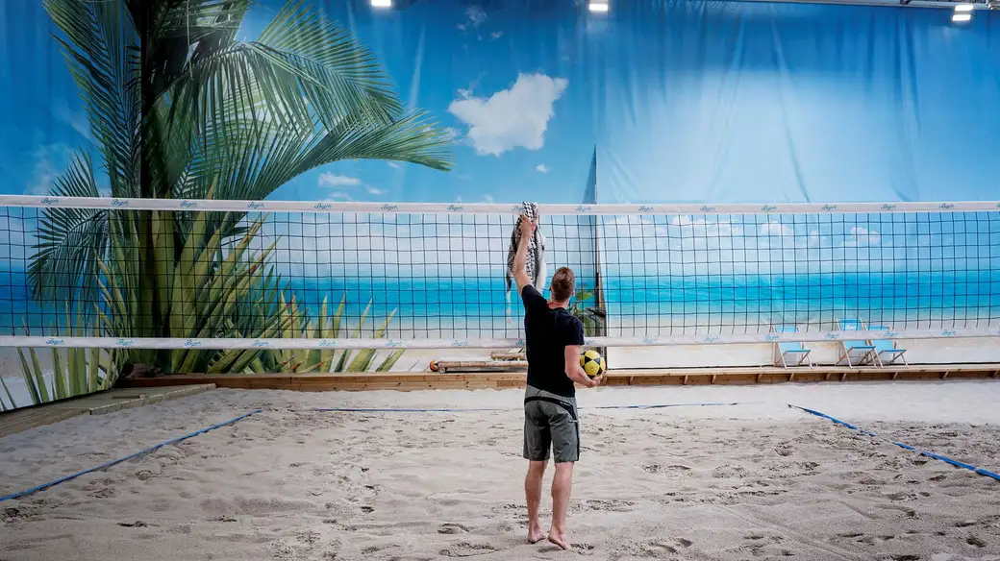
After the match, the Israeli thanked his fans for all the “creative tips” on things to do “off the court.” By then, Wiena was already on his flight home. He has filed police reports about the threats in both Sweden and Austria.
In a formal joint complaint to the executive committee of the European Footvolley League (EFVL), Ioannis Tsiouris and Rufus Wiena demand that the league now act against the threats they have been subjected to. The league has responded that the matter is under review.
“These are strange times we live in. As things stand now, I feel I can't trust anyone at all in the footvolley world,” says Rufus Wiena.
Fact: Footvolley
- Footvolley is a young sport — with roots on Copacabana beach — that is growing rapidly internationally.
- It is played by two-player teams, on sand — like beach volleyball — but with the net at a lower height.
- In footvolley, players are not allowed to touch the ball with their hands; they use their bodies, heads — and feet, of course.
- After Brazil, Israel is the country in the world with the most professional players.
When DN contacts those responsible within the sport, the Swedish players' cooperative body — Footvolley Sweden — responds that they “take seriously the information Rufus has provided about threats and harassment.” In an email, the board emphasises that they are “a small non-profit collaborative group at amateur level” but that they have raised the issue with the European league.
EFVL president Igor Oliveira writes to DN that he too takes the situation seriously and that the league — which is under construction — is working to strengthen its “structures and procedures” to guarantee a “safe and respectful environment.”
Oliveira writes that he has been in contact with the sport's Israeli representatives and that EFVL, in parallel, is reviewing how to handle conduct issues going forward: “The current ethical framework may need to be clarified.”
The Israeli league management has not responded to DN's questions.

Rufus Wiena is disappointed with the responses.
“This is a matter of will, not resources.”
Last year he became Swedish and Nordic champion in footvolley, a title he had been fully set on defending. Now he no longer knows if he wants to continue playing.
“I don't want to be associated with a sport that accepts that kind of behaviour. I'm someone who has a hard time accepting injustice. When children or innocent people are harmed, we have an obligation to stand up for each other,” says Rufus Wiena.
This is an unofficial English translation of the original Swedish article published by Dagens Nyheter (DN). The original article is available at dn.se (subscription required).
DN (Dagens Nyheter) is one of Sweden's largest and most influential national newspapers.
🔥 One of Sweden's most viewed, liked, and shared news stories today — viral spread across DN's social media: hundreds of thousands of video views, thousands of likes and shares across Instagram and TikTok.

📱 DN Social Media — Follow the Story
The article was featured across 6 sections on DN.se: front page, Sport, Israel-Palestina, Gaza, Göteborg, and Nyhetsdygnet 7 July 2026.
🤲 Thank You, the People of Sweden
Featured across six sections on DN.se. Front page. Sport. Israel-Palestina. Gaza. Göteborg. Nyhetsdygnet. 7 July 2026.
The REACH has been BEYOND anything we imagined!
The people of Sweden stood up. Athletes, artists, public figures, everyday people. They raised their voices in disgust at the threats. In disgust at the silence. Worldwide.
To Kristina Hedberg and her team at Dagens Nyheter: thank you for the courage to investigate and publish. You gave this story a platform. You gave it reach. You gave it truth.
From Göteborg to the people of Sweden. From the people of Sweden to the world.
Thank you for standing with humanity.
EXPOSE "No politics in sport" doesn't exist!
Sport has never been separate from society. Every major social movement in history has played out on the field, on the court, and in the arena. From Jesse Owens to Muhammad Ali, from Tommie Smith's raised fist to Colin Kaepernick's knee — sport is where injustice becomes visible and where courage becomes contagious.
Today, the footvolley community is no exception. While the Israel Footvolley Association (IFA) and its supporters aggressively demand “no politics in sport” from European players and organizers, they simultaneously engage in overt political sportswashing themselves — a stance that the European Footvolley League (EFVL) has largely normalized without critical judgement.
This strategy includes the use of footvolley events, international partnerships, influencer athletes, propaganda-style content, and guided tours connected to the October 7th attacks to build international sympathy, normalize the actions of the Israeli state, and strengthen its image within the global footvolley community. At the same time, players who speak out against genocide, apartheid, war crimes, intimidation, or dehumanization are attacked, threatened, or silenced.
When players accept money from a state accused of committing an active genocide — while federations ignore intimidation and death threats directed at those who object — sport itself becomes complicit. Silence is not neutrality. Neutrality is a political choice.
The TAFC Connection: Anderson Águia, a World Champion and arguably the most influential figure in global footvolley, has lent his brand and credibility to TAFC Israel by organizing tournaments in Eilat while the International Court of Justice (ICJ) has ruled Israel's occupation illegal and UN experts have called for Israel's suspension from international sport. At the same time, hundreds of Palestinian athletes have been killed and more than two hundred sports venues destroyed in Gaza alone. As the world's largest footvolley tournament series, TAFC has become one of the primary vehicles through which Israel gains international sporting legitimacy inside the footvolley community.
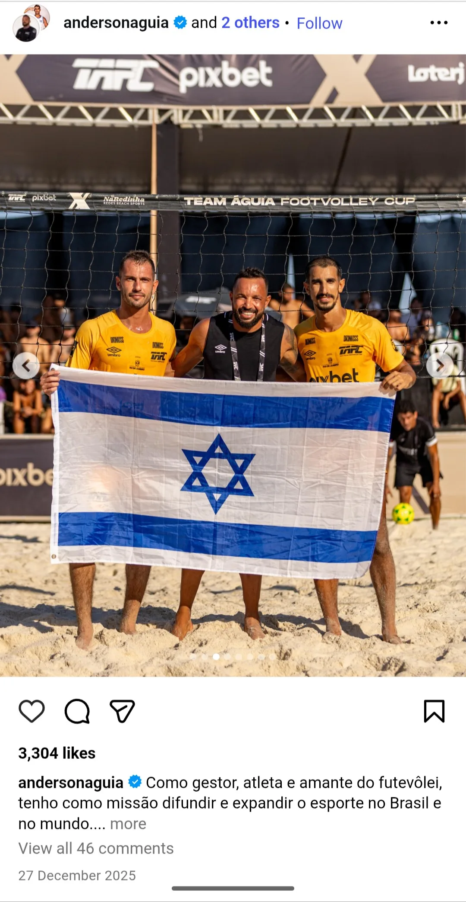
The contradiction is obvious: politics are considered “unacceptable” only when players challenge oppression — never when sport is used to normalize it.
The material below documents examples of this broader strategy, the public positioning of the Israel Footvolley Association (IFA), and the wider effort to politically instrumentalize footvolley while demanding silence from those who object.
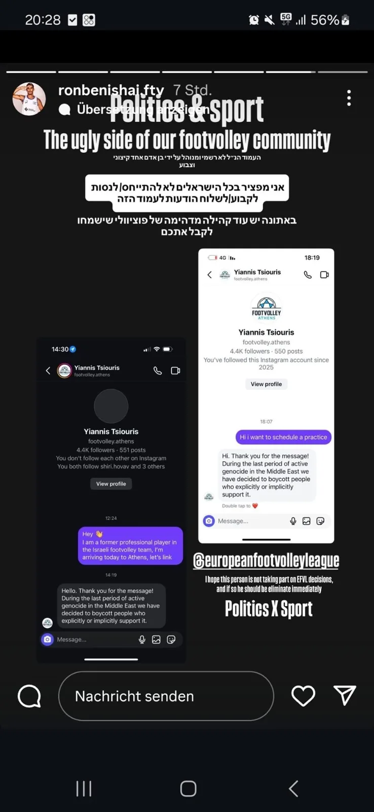
Ron Ben Ishai (@ronbenishai.ftv) — Israeli footvolley player. IG story titled "Politics & Sport — The ugly side of our footvolley community".
Hebrew: "העמוד הכי לא רשמי ומנוהל על ידי בן אדם אחד קיצוני וצבוע" = "The most unofficial page, run by one extremist and hypocritical person"
Hebrew: "אני מפציר בכל הישראלים לא להתייחס/לנסות לקבוע/לשלוח הודעות לעמוד הזה" = "I urge all Israelis not to respond/engage/send messages to this page"
Hebrew: "באתונה יש עוד קהילה מדהימה של פוציוולי שישמחו לקבל אתכם" = "In Athens there is another amazing footvolley community that would be happy to welcome you"
The post also shows two DM screenshots where Yiannis Tsiouris (@footvolley.athens) responds to Israeli players wanting to visit Athens: "During the last period of active genocide in the Middle East we have decided to boycott people who explicitly or implicitly support it."
Bottom text directed at @europeanfootvolleyleague: "I hope this person is not taking part on EFVL decisions, and if so he should be eliminated immediately"
Posted by @ronbenishai.ftv

Ron Ben Ishai (@ronbenishai.ftv) — Israeli footvolley player (verified account). Messages include: "I will personally take care no one from Israel will ever train/work/pay/collaborate anything with you. Good luck. Keep supporting terror organisations and delegitimise Israel people." — economic threats and intimidation against a player who posted about Palestinian casualties.

IDF "Heroes Tournament" — ~15 IDF soldiers in uniform posing for TAFC Israel poster.
Hebrew: "טורניר גיבורים" = "Heroes Tournament"
Location: חוף פרישמן תל אביב = Frishman Beach, Tel Aviv
Date: 03/10/25
Hebrew caption: "ב-03.10.25 כולנו ניפגש על חוף פרישמן בתל אביב, לטורניר מיוחד שמוקדש לגיבורים האמיתיים שלנו" = "On 03.10.25 we all meet at Frishman Beach in Tel Aviv, for a special tournament dedicated to our true heroes"
Posted by @tafc_israel and @stormo_official
Source: Instagram post
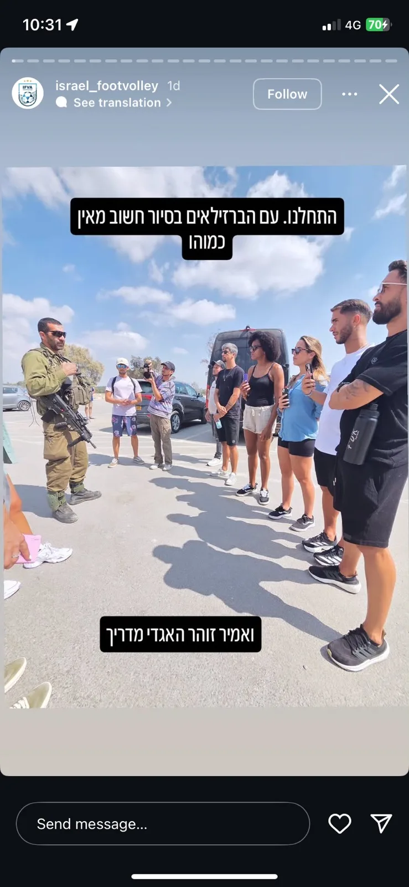
IDF propaganda tour with Brazilians
Hebrew: "התחלנו. עם הברזילאים בסיור חשוב מאין כמוהו" = "We started. With the Brazilians on an incredibly important tour"
Hebrew: "ואמיר זוהר האגדי מדריך" = "And the legendary Amir Zohar as guide"
Image: Armed IDF soldier briefing Brazilian footvolley players.
Posted by @israel_footvolley
Tagged: @nataly.rotem

October 7 propaganda tour
Portuguese: "Tour - Atentado de 07/10/23" = "Tour - Attack of 07/10/23"
"Oportunidade de estar dentro da história e compreender por prismas diferentes" = "Opportunity to be inside history and understand through different perspectives"
Posted by @israel_footvolley, reshared by @marii_leo
Tagged: @O9aninha @bruninhofutevolei @daviftv03 @paulinhoftv @nataly.rotem @futilina.il
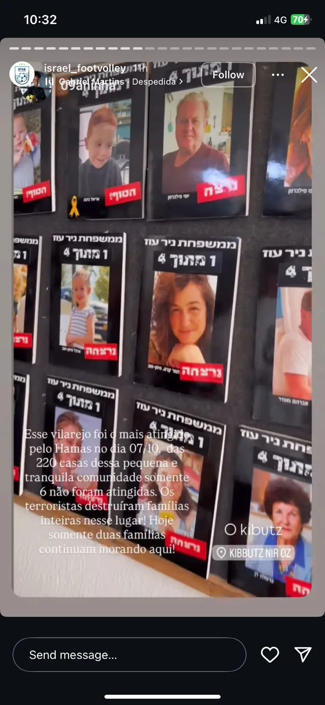
Kibbutz Nir Oz memorial
Hebrew: "ממשפחת ניר עוז" = "From the family of Nir Oz" | "חטוף!" = "Kidnapped!" | "נרצחה" = "Murdered"
Portuguese: "Esse vilarejo foi o mais atingido pelo Hamas no dia 07/10, das 220 casas dessa pequena e tranquila comunidade somente 6 não foram atingidas. Os terroristas destruíram famílias inteiras nesse lugar!" = "This village was the most affected by Hamas on 07/10, of the 220 houses only 6 were not hit. The terrorists destroyed entire families!"
Reshared by Gabriel Martins

IDF Propaganda Tour — Nova Festival memorial site
Brazilian footvolley players taken on a guided propaganda tour of the Nova Festival memorial site.
Hebrew: "אורי הרפז · החול יזכור" = "Uri Harpaz · The sand will remember"
Tagged: @nataly.rotem
Posted by @israel_footvolley

IDF Propaganda Tour — Gaza Border Area
Hebrew: "סיור עם התיירים שלנו, הברזילאים לעוטף עזה, למלחמה. המדריך, השחקן הלוחם, אמיר זוהר." = "Tour with our tourists, the Brazilians to the Gaza border area, to the war. The guide, the player-fighter, Amir Zohar."
#bringthemhomenow 🎗️
Tagged: @nataly.rotem, @amirzoha1
Posted by @israel_footvolley
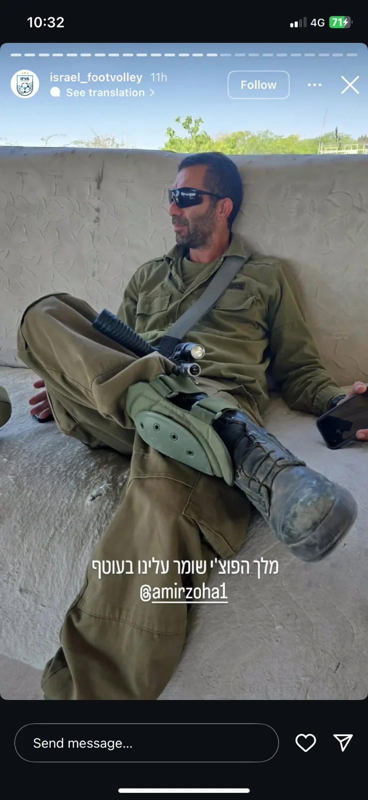
Amir Zohar (@amirzoha1) in full IDF uniform with rifle
Hebrew: "מלך הפוצ'י שומר עלינו בעוטף" = "The king of footvolley guards us at the Gaza border area"
Amir Zohar — described by @israel_footvolley as the "legendary guide" and "player-fighter" — photographed in full IDF military uniform with an assault rifle, sitting at a military position near the Gaza border. The same person who leads propaganda tours for international footvolley players.
Tagged: @amirzoha1
Posted by @israel_footvolley
Hasbara: The $730 Million Propaganda Machine
Israel's 2026 public diplomacy budget — known as Hasbara (Hebrew for “explanation”) — has been approved at approximately $730 million, a massive increase from $150 million in 2025. This state-funded propaganda campaign is designed to justify Israeli policies, improve the image of the occupation, and counter growing international backlash over accusations of genocide. The funding supports social media campaigns, influencer outreach, official trips, and partnerships aimed at shaping international opinion.
Despite this enormous investment, the campaign has struggled to contain global criticism — also with western countries such as Italy, France, and Spain summoning Israeli ambassadors following the treatment of Global Sumud Flotilla activists and inflammatory public messaging from Israeli officials in 2026.
Footvolley's relatively small size makes it an especially effective sportswashing vehicle: less media scrutiny, a tightly connected community where dissent can be marginalized, and the ability to buy legitimacy through a handful of influential figures rather than lobbying massive federations like FIFA.
Join FTVR
What is FTVR?
FTVR is more than a footvolley club — it is a movement. A global community that stands with humanity, resists oppression, and refuses to normalize genocide, war crimes, and the disturbing realities we have witnessed in the footvolley community — both on and off the footvolley court.
FTVR is open and decentralized — meaning there is no single point of failure. Anyone can build on top of this, expand it, and grow the community. Only your imagination is the limit.
ANYONE* can join FTVR — as a member or a supporter — anywhere in the world, at any time. It is completely free. No registration, no fees. Simply stand with humanity, follow our policy, and represent FTVR. That's it.
*Provided you follow our community policy.
Also (if you want), you can even expand the movement by creating your own branch — like "FTVR Brazil", "Footvolley Resistance Helsinki" — and grow a healthy community that protects each other and stands up for each other.
✊ WELCOME
Anyone who stands with humanity, shows respect and good behavior is welcome — both religious and non-religious people. (See specifics in our policy in footer)
✋ NOT WELCOME
You are not welcome in this community if you:
- Threaten, intimidate, harass, or behave aggressively toward footvolley players, their families, friends, or communities
- Support — explicitly or implicitly — the actions, policies, or military operations of the IDF
- Support, enable, justify, or participate in genocide, war crimes, apartheid, ethnic cleansing, or crimes against humanity — including the ongoing atrocities in Gaza
- Promote or support Zionism, Nazism, fascism or other ethno-supremacist and dehumanizing ideologies including those of the illegal apartheid state of Israel
- Fail to comply with our community behavior and ethical standards policy (detailed below)
How to participate:
- Represent Footvolley Resistance directly in your area
- Use our logo on clothes, accessories, and equipment (free to copy and use)
- Share our content and hashtags on social media
- Print and display our tags anywhere footvolley is played
- Create your own local branch using our materials (free to copy and use)
- Defend and protect each other — on and off the court
- Spread the word — speak up, stand together
FTVR functions as a decentralized global movement, with The Footvolley Resistance Club serving as our official entity, incorporated under a Swedish company umbrella.
📢 Important: Since FTVR is a decentralized club, we do not have any official social media accounts yet! For now, please share our website directly and tag us using our hashtags.
Logo Kit
The official FTVR logo for your clothes, social media, or branch materials. Free for all members and supporters.
Support
Donate to Gaza and the Oppressed or show support by spreading the word, standing with humanity, and speaking out about the disturbing realities inside and outside the global footvolley community — both on and off the court. Do what you can, do your best!

IDF soldier says he snipes children in head and chest for fun ("The world's most moral army!")


{kind=link}
{kind=link}
{kind=link}